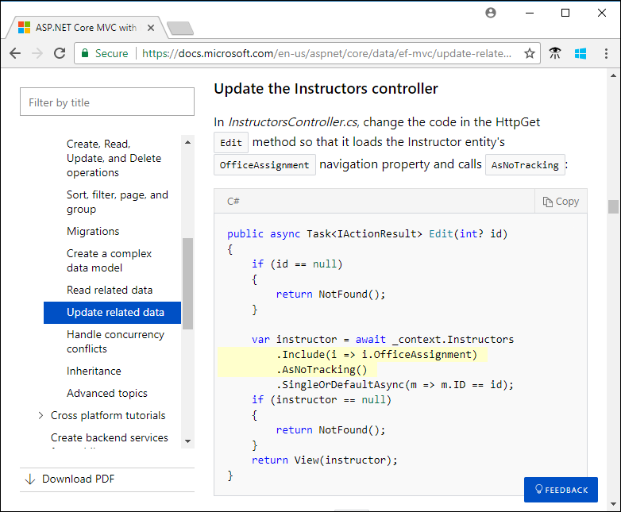

How to include code in docs
There are several ways to include code in an article published on docs.microsoft.com:
Individual elements (words) within a line.
Here's an example of
codestyle.Use code format when referring to named parameters and variables in a nearby code block in your text. Code format may also be used for properties, methods, classes, and language keywords. For more information, see Code elements later in this article..
Code blocks in the article Markdown file.
```csharp public static void Log(string message) { _logger.LogInformation(message); } ```Use inline code blocks when it's impractical to display code by reference to a code file. For more information, see Code blocks later in this article.
Code blocks by reference to a code file in the local repository.
:::code language="csharp" source="intro/samples/cu/Controllers/StudentsController.cs" range="2-24,26":::For more information, see In-repo snippet references later in this article.
Code blocks by reference to a code file in another repository.
:::code language="csharp" source="~/samples-durable-functions/samples/csx/shared/Location.csx" highlight="2,5":::For more information, see Out-of-repo snippet references later in this article.
Code blocks that let the user execute code in the browser.
:::code source="PowerShell.ps1" interactive="cloudshell-powershell":::For more information, see Interactive code snippets later in this article.
Besides explaining the Markdown for each of these ways to include code, the article provides some general guidance for all code blocks.
Code elements
A "code element" is a programming language keyword, class name, property name, and so forth. It's not always obvious what qualifies as code. For example, NuGet package names should be treated as code. When in doubt, see Text formatting guidelines.
Inline code style
To include a code element in article text, surround it with backticks (`) to indicate code style. Inline code style shouldn't use the triple-backtick format.
| Markdown | Rendered |
|---|---|
| By default, the Entity Framework interprets a property that's named `Id` or `ClassnameID` as the primary key. | By default, the Entity Framework interprets a property that's named Id or ClassnameID as the primary key. |
When an article is localized (translated into other languages), text styled as code is left untranslated. If you want to prevent localization without using code style, see Non-localized strings.
Bold style
Some older style guides specify bold for inline code. Bold is an option when code style is so obtrusive as to compromise readability. For example, a Markdown table with mostly code elements might look too busy with code styling everywhere. If you choose to use bold style, use non-localized strings syntax to make sure that code is not localized.
Links
A link to reference documentation may be more helpful than code format in some contexts. If you use a link, don't apply code format to the link text. Styling a link as code can obscure the fact that the text is a link.
If you use a link and refer to the same element later in the same context, make the subsequent instances code format rather than links.
Placeholders
If you want the user to replace a section of displayed code with their own values, use placeholder
text marked off by angle brackets or curly braces. For example:
az group delete -n <ResourceGroupName>. Explain that the brackets or braces must be removed when
substituting real values.
Code blocks
The syntax for including code in a doc depends on where the code is located:
- In the article Markdown file
- In a code file in the same repository
- In a code file in a different repository
Following are guidelines that apply to all three types of code blocks:
Screenshots
All of the methods listed in the preceding section result in usable code blocks:
- You can copy and paste from them.
- They're indexed by search engines.
- They're accessible to screen readers.
These are just a few of the reasons why IDE screenshots aren't recommended as a method of including code in an article. Use IDE screenshots for code only if you're showing something about the IDE itself, like IntelliSense. Don't use screenshots just to show colorization and highlighting.
Code validation
Some repositories have implemented processes that automatically compile all sample code to check for errors. The .NET repository does this. For more information, see Contributing in the .NET repository.
If you are including code blocks from another repository, work with the owners on a maintenance strategy for the code so that your included code does not break or go out of date as new versions of the libraries the code uses are shipped.
Highlighting
Snippets typically include more code than necessary in order to provide context. It helps readability when you highlight the key lines that you're focusing on in the snippet, as in this example:

You can't highlight code when you include it in the article Markdown file. It works only for code snippets included by reference to a code file.
Horizontal scroll bars
Break up long lines to avoid horizontal scroll bars. Scroll bars on code blocks make code hard to read. They're especially problematic on longer code blocks, where it may be impossible to see the scroll bar and the line you want to read at the same time.
A good practice for minimizing horizontal scroll bars on code blocks is to break up code lines longer than 85 characters. But keep in mind that the presence or absence of a scroll bar isn't the only criterion of readability. If breaking a line before 85 hurts readability or copy-paste convenience, feel free to go over 85.
Inline code blocks
Use inline code blocks only when it's impractical to display code by reference to a code file. Inline code is generally more difficult to test and keep up to date compared to a code file that is part of a complete project. And inline code may omit context that could help the developer to understand and use the code. These considerations apply mainly to programming languages. Inline code blocks can also be used for outputs and inputs (such as JSON), query languages (such as SQL), and scripting languages (such as PowerShell).
There are two ways to indicate a section of text in an article file is a code block: by fencing it in triple-backticks (```) or by indenting it. Fencing is preferred because it lets you specify the language. Avoid using indentation because it's too easy to get wrong and it may be hard for another writer to understand your intent when they need to edit your article.
Language indicators are placed immediately after the opening triple-backticks, as in the following example:
Markdown:
```json
{
"aggregator": {
"batchSize": 1000,
"flushTimeout": "00:00:30"
}
}
```
Rendered:
{
"aggregator": {
"batchSize": 1000,
"flushTimeout": "00:00:30"
}
}
For information about the values you can use as language indicators, see Language names and aliases.
If you use a language or environment word after the triple-backticks (```) that isn't supported, that word appears in the code section title bar on the rendered page. Whenever possible, use a language or environment indicator in your inline code blocks.
Note
If you copy and paste code from a Word document, make sure it has no "curly quotes," which aren't valid in code (for example, “ and ’). If it does, change them back to normal quotes (' and "). Alternatively, rely on the Docs Authoring Pack, smart quotes replacement feature.
In-repo snippet references
The preferred way to include code snippets for programming languages in docs is by reference to a code file. This method gives you the ability to highlight lines of code and makes the wider context of the snippet available on GitHub for developers to use. You can include code by using the triple colon format (:::) either manually or in Visual Studio Code with the help of the docs.microsoft.com Authoring Pack.
- In Visual Studio Code, click Alt + M or Option + M and select Snippet.
- Once Snippet is selected, you will be prompted for Full Search, Scoped Search or Cross-Repository Reference. To search locally, select Full Search.
- Enter a search term to find the file. Once you've found the file, select the file.
- Next, select an option to determine which line(s) of code should be included in the snippet. The options are: ID, Range and None.
- Based on your selection from Step 4, provide a value if necessary.
Display entire code file:
:::code language="csharp" source="intro/samples/cu/Controllers/StudentsController.cs":::
Display part of a code file by specifying line numbers:
:::code language="csharp" source="intro/samples/cu/Controllers/StudentsController.cs" range="2-24,26":::
Display part of a code file by specifying a snippet name:
:::code language="csharp" source="intro/samples/cu/Controllers/StudentsController.cs" id="snippet_Create":::
The following sections explain these examples:
- Use a relative path to the code file
- Include only selected line numbers
- Refer to a named snippet
- Highlight selected lines
For more information, see Snippet syntax reference later in this article.
Path to code file
Example:
:::code language="csharp" source="intro/samples/cu/Controllers/StudentsController.cs" range="2-24,26":::
The example is from the ASP.NET docs repo, aspnetcore/data/ef-mvc/crud.md article file. The code file is referenced by a relative path to aspnetcore/data/ef-mvc/intro/samples/cu/Controllers/StudentsController.cs in the same repository.
Selected line numbers
Example:
:::code language="csharp" source="intro/samples/cu/Controllers/StudentsController.cs" range="2-24,26":::
This example displays only lines 2-24 and 26 of the StudentController.cs code file.
Prefer named snippets over hard-coded line numbers, as explained in the next section.
Named snippet
Example:
:::code language="csharp" source="intro/samples/cu/Controllers/StudentsController.cs" id="snippet_Create":::
Use only letters and underscores for the name.
The example displays the snippet_Create section of the code file. The code file for this example
has snippet tags in comments in the C# code:
// code excluded from the snippet
// <snippet_Create>
// code included in the snippet
// </snippet_Create>
// code excluded from the snippet
Whenever you can, refer to a named section rather than specifying line numbers. Line number references are brittle because code files inevitably change in ways that make line numbers change. You don't necessarily get notified of such changes. Your article eventually starts showing the wrong lines and you have no clue anything has changed.
Highlighting selected lines
Example:
:::code language="csharp" source="intro/samples/cu/Controllers/StudentsController.cs" range="2-24,26" highlight="2,5":::
The example highlights lines 2 and 5, counting from the start of the displayed snippet. Line numbers to highlight don't count from the start of the code file. In other words, lines 3 and 6 of the code file are highlighted.
Out-of-repo snippet references
If the code file you want to reference is in a different repository, set up the code repository as a dependent repository. When you do that, you specify a name for it. That name then acts like a folder name for purposes of code references.
For example, the docs repository is Azure/azure-docs, and the code repository is Azure/azure-functions-durable-extension.
In the root folder of azure-docs, add the following section in .openpublishing.publish.config.json:
{
"path_to_root": "samples-durable-functions",
"url": "https://github.com/Azure/azure-functions-durable-extension",
"branch": "master",
"branch_mapping": {}
},
Now when you refer to samples-durable-functions as if it were a folder in azure-docs, you're actually referring to the root folder in the azure-functions-durable-extension repository.
You can include code by using the triple colon format (:::) either manually or in Visual Studio Code with the help of the docs.microsoft.com Authoring Pack.
- In Visual Studio Code, click Alt + M or Option + M and select Snippet.
- Once Snippet is selected, you will be prompted for Full Search, Scoped Search or Cross-Repository Reference. To search across repositories, select Cross-Repository Reference.
- You will be given a selection of repositories that are in .openpublishing.publish.config.json. Select a repository.
- Enter a search term to find the file. Once you've found the file, select the file.
- Next, select an option to determine which line(s) of code should be included in the snippet. The options are: ID, Range and None.
- Based on your selection from Step 5, provide a value.
Your snippet reference will look like this:
:::code language="csharp" source="~/samples-durable-functions/samples/csx/shared/Location.csx" highlight="2,5":::
In the azure-functions-durable-extension repository, that code file is in the samples/csx/shared folder. As noted earlier, line numbers for highlighting are relative to the start of the snippet rather than the start of the file.
Note
The name you assign to the dependent repository is relative to the root of the main repository, but the tilde (~) refers to the root of the doc set. The doc set root is determined by build_source_folder in .openpublishing.publish.config.json. The path to the snippet in the preceding example works in the azure-docs repo because build_source_folder refers to the repo root (.). If build_source_folder were articles, the path would start with ~/../samples-durable-functions instead of ~/samples-durable-functions.
Interactive code snippets
Inline interactive code blocks
For the following languages, code snippets can be made executable in the browser window:
- Azure Cloud Shell
- Azure PowerShell Cloud Shell
- C# REPL
When interactive mode is enabled, the rendered code boxes have a Try It or Run button. For example:
```azurepowershell-interactive
New-AzResourceGroup -Name myResourceGroup -Location westeurope
```
renders as follows:
New-AzResourceGroup -Name myResourceGroup -Location westeurope
To turn on this feature for a particular code block, use a special language identifier. The available options are:
azurepowershell-interactive- Enables the Azure PowerShell Cloud Shell, as in the preceding exampleazurecli-interactive- Enables the Azure Cloud Shellcsharp-interactive- Enables the C# REPL
For the Azure Cloud Shell and PowerShell Cloud Shell, users can run commands against only their own Azure account.
Code snippets included by reference
You can enable interactive mode for code snippets included by reference. Here are examples:
:::code source="PowerShell.ps1" interactive="cloudshell-powershell":::
:::code source="Bash.sh" interactive="cloudshell-bash":::
To turn on this feature for a particular code block, use the interactive attribute. The
available attribute values are:
cloudshell-powershell- Enables the Azure PowerShell Cloud Shell, as in the preceding examplecloudshell-bash- Enables the Azure Cloud Shelltry-dotnet- Enables Try .NETtry-dotnet-class- Enables Try .NET with class scaffoldingtry-dotnet-method- Enables Try .NET with method scaffolding
For the Azure Cloud Shell and PowerShell Cloud Shell, users can only run commands against their own Azure account.
Snippet syntax reference
Syntax:
:::code language="<language>" source="<path>" <attribute>="<attribute-value>":::
Important
This syntax is a block Markdown extension. It must be used on its own line.
<language>(optional)- Language of the code snippet. For more information, see the Supported languages section later in this article.
<path>(mandatory)- Relative path in the file system that indicates the code snippet file to reference.
<attribute>and<attribute-value>(optional)Used together to specify how the code should be retrieved from the file and how it should be displayed:
range:1,3-5A range of lines. This example includes lines 1, 3, 4, and 5.id:snippet_CreateThe ID of the snippet that needs to be inserted from the code file. This value cannot co-exist with range.highlight:2-4,6Range and/or numbers of lines that need to be highlighted in the generated code snippet. The numbering is relative to the lines displayed (as specified by range or id), not the file.interactive:cloudshell-powershell,cloudshell-bash,try-dotnet,try-dotnet-class,try-dotnet-methodString value determines what kinds of interactivity are enabled.- For details about tag name representation in code snippet source files by language, see the DocFX guidelines.
Supported languages
The Docs Authoring Pack includes a feature to provide statement completion and validation of the available language identifiers for code fence blocks.
Fenced code blocks
| Name | Valid aliases |
|---|---|
| .NET Core CLI | dotnetcli |
| 1C | 1c |
| ABNF | abnf |
| Access logs | accesslog |
| Ada | ada |
| ARM assembler | armasm, arm |
| AVR assembler | avrasm |
| ActionScript | actionscript, as |
| Alan | alan, i |
| AngelScript | angelscript, asc |
| ANTLR | antlr |
| Apache | apache, apacheconf |
| AppleScript | applescript, osascript |
| Arcade | arcade |
| AsciiDoc | asciidoc, adoc |
| AspectJ | aspectj |
| ASPX | aspx |
| ASP.NET (C#) | aspx-csharp |
| ASP.NET (VB) | aspx-vb |
| AutoHotkey | autohotkey |
| AutoIt | autoit |
| Awk | awk, mawk, nawk, gawk |
| Axapta | axapta |
| AzCopy | azcopy |
| Azure CLI | azurecli |
| Azure CLI (Interactive) | azurecli-interactive |
| Azure Powershell | azurepowershell |
| Azure Powershell (Interactive) | azurepowershell-interactive |
| Bash | bash, sh, zsh |
| Basic | basic |
| BNF | bnf |
| C | c |
| C# | csharp, cs |
| C# (Interactive) | csharp-interactive |
| C++ | cpp, c, cc, h, c++, h++, hpp |
| C++/CX | cppcx |
| C++/WinRT | cppwinrt |
| C/AL | cal |
| Cache Object Script | cos, cls |
| CMake | cmake, cmake.in |
| Coq | coq |
| CSP | csp |
| CSS | css |
| Cap'n Proto | capnproto, capnp |
| Clojure | clojure, clj |
| CoffeeScript | coffeescript, coffee, cson, iced |
| Crmsh | crmsh, crm, pcmk |
| Crystal | crystal, cr |
| Cypher (Neo4j) | cypher |
| D | d |
| DAX Power BI | dax |
| DNS Zone file | dns, zone, bind |
| DOS | dos, bat, cmd |
| Dart | dart |
| Delphi | delphi, dpr, dfm, pas, pascal, freepascal, lazarus, lpr, lfm |
| Diff | diff, patch |
| Django | django, jinja |
| Dockerfile | dockerfile, docker |
| dsconfig | dsconfig |
| DTS (Device Tree) | dts |
| Dust | dust, dst |
| Dylan | dylan |
| EBNF | ebnf |
| Elixir | elixir |
| Elm | elm |
| Erlang | erlang, erl |
| Excel | excel, xls, xlsx |
| Extempore | extempore, xtlang, xtm |
| F# | fsharp, fs |
| FIX | fix |
| Fortran | fortran, f90, f95 |
| G-Code | gcode, nc |
| Gams | gams, gms |
| GAUSS | gauss, gss |
| GDScript | godot, gdscript |
| Gherkin | gherkin |
| GN for Ninja | gn, gni |
| Go | go, golang |
| Golo | golo, gololang |
| Gradle | gradle |
| Groovy | groovy |
| HTML | html, xhtml |
| HTTP | http, https |
| Haml | haml |
| Handlebars | handlebars, hbs, html.hbs, html.handlebars |
| Haskell | haskell, hs |
| Haxe | haxe, hx |
| Hy | hy, hylang |
| Ini | ini |
| Inform7 | inform7, i7 |
| IRPF90 | irpf90 |
| JSON | json |
| Java | java, jsp |
| JavaScript | javascript, js, jsx |
| Kotlin | kotlin, kt |
| Kusto | kusto |
| Leaf | leaf |
| Lasso | lasso, ls, lassoscript |
| Less | less |
| LDIF | ldif |
| Lisp | lisp |
| LiveCode Server | livecodeserver |
| LiveScript | livescript, ls |
| Lua | lua |
| Makefile | makefile, mk, mak |
| Markdown | markdown, md, mkdown, mkd |
| Mathematica | mathematica, mma, wl |
| Matlab | matlab |
| Maxima | maxima |
| Maya Embedded Language | mel |
| Mercury | mercury |
| mIRC Scripting Language | mirc, mrc |
| Mizar | mizar |
| Managed Object Format | mof |
| Mojolicious | mojolicious |
| Monkey | monkey |
| Moonscript | moonscript, moon |
| MS Graph (Interactive) | msgraph-interactive |
| N1QL | n1ql |
| NSIS | nsis |
| Nginx | nginx, nginxconf |
| Nimrod | nimrod, nim |
| Nix | nix |
| OCaml | ocaml, ml |
| Objective C | objectivec, mm, objc, obj-c |
| OpenGL Shading Language | glsl |
| OpenSCAD | openscad, scad |
| Oracle Rules Language | ruleslanguage |
| Oxygene | oxygene |
| PF | pf, pf.conf |
| PHP | php, php3, php4, php5, php6 |
| Parser3 | parser3 |
| Perl | perl, pl, pm |
| Plaintext no highlight | plaintext |
| Pony | pony |
| PostgreSQL & PL/pgSQL | pgsql, postgres, postgresql |
| PowerShell | powershell, ps |
| PowerShell (Interactive) | powershell-interactive |
| Processing | processing |
| Prolog | prolog |
| Properties | properties |
| Protocol Buffers | protobuf |
| Puppet | puppet, pp |
| Python | python, py, gyp |
| Python profiler results | profile |
| Q# | qsharp |
| Q | k, kdb |
| QML | qml |
| R | r |
| Razor CSHTML | cshtml, razor, razor-cshtml |
| ReasonML | reasonml, re |
| RenderMan RIB | rib |
| RenderMan RSL | rsl |
| Roboconf | graph, instances |
| Robot Framework | robot, rf |
| RPM spec files | rpm-specfile, rpm, spec, rpm-spec, specfile |
| Ruby | ruby, rb, gemspec, podspec, thor, irb |
| Rust | rust, rs |
| SAS | SAS, sas |
| SCSS | scss |
| SQL | sql |
| STEP Part 21 | p21, step, stp |
| Scala | scala |
| Scheme | scheme |
| Scilab | scilab, sci |
| Shape Expressions | shexc |
| Shell | shell, console |
| Smali | smali |
| Smalltalk | smalltalk, st |
| Solidity | solidity, sol |
| Stan | stan |
| Stata | stata |
| Structured Text | iecst, scl, stl, structured-text |
| Stylus | stylus, styl |
| SubUnit | subunit |
| Supercollider | supercollider, sc |
| Swift | swift |
| Tcl | tcl, tk |
| Terraform (HCL) | terraform, tf, hcl |
| Test Anything Protocol | tap |
| TeX | tex |
| Thrift | thrift |
| TOML | toml |
| TP | tp |
| Twig | twig, craftcms |
| TypeScript | typescript, ts |
| VB.NET | vbnet, vb |
| VBScript | vbscript, vbs |
| VHDL | vhdl |
| Vala | vala |
| Verilog | verilog, v |
| Vim Script | vim |
| X++ | xpp |
| x86 Assembly | x86asm |
| XL | xl, tao |
| XQuery | xquery, xpath, xq |
| XAML | xaml |
| XML | xml, xhtml, rss, atom, xjb, xsd, xsl, plist |
| YAML | yml, yaml |
| Zephir | zephir, zep |
Tip
The Docs Authoring Pack, Dev Lang Completion feature uses the first valid alias when multiple aliases are available.
Next steps
For information on text formatting for content types other than code, see Text formatting guidelines.